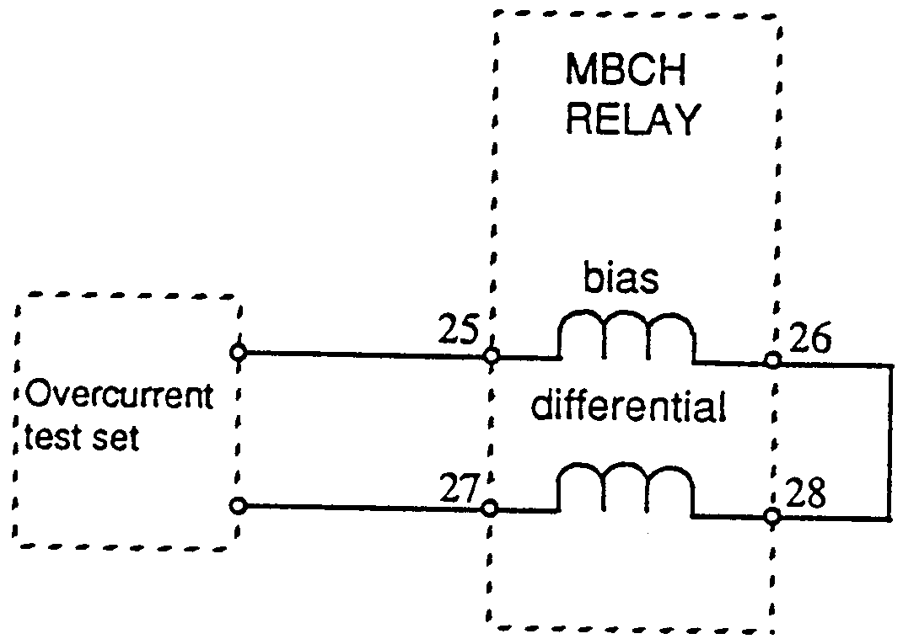
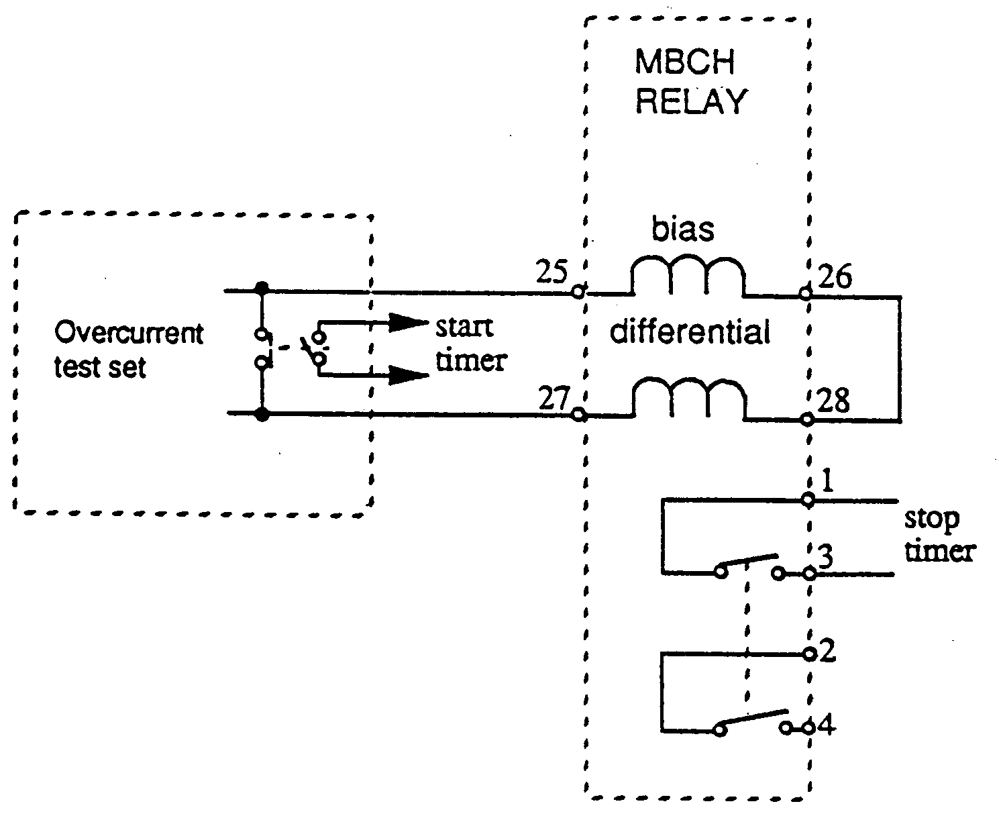
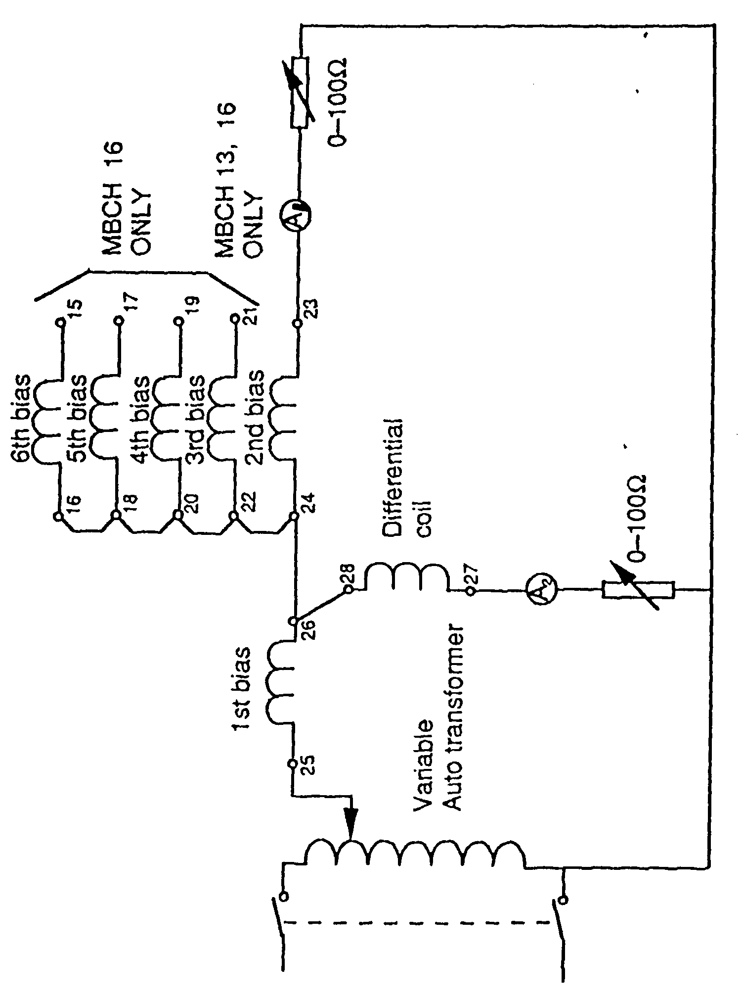
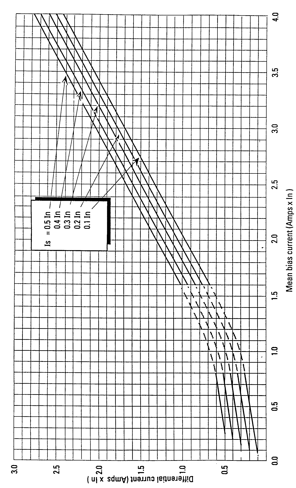
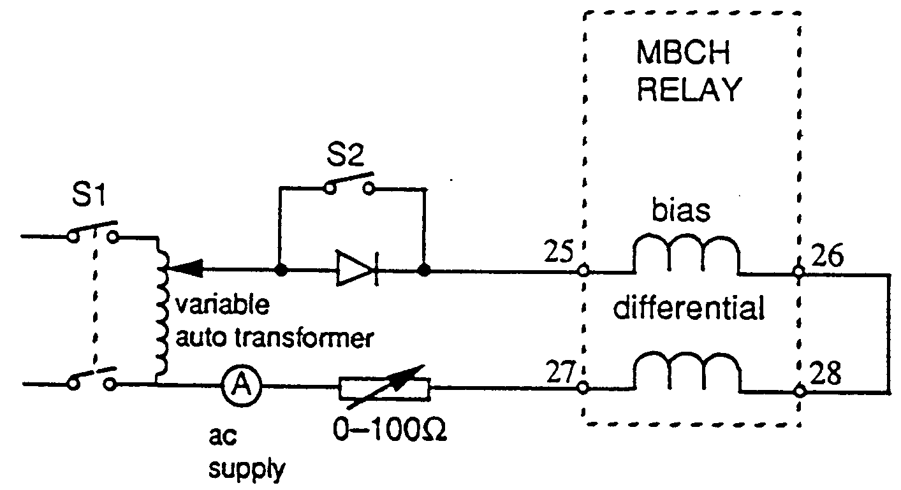

| Protection |
Differential Relay
MBCH
GEC
Document No: DfR-009-r0
Issued to: New Sharkia
Status:
Testing Procedure(s)
Approved Date : 29 Dec 1997
Date to be Reviewed: Dec 2002
|
|
|
|||
| Equipment: Differential Relay MBCH GEC |
Document No: DfR-009-r0 |
|||
|
Issued to: New Sharkia |
||||
|
Status: |
||||
| Procedure: Testing Procedure(s) |
Approved Date : 29 Dec 1997 |
|||
|
Date to be Reviewed: Dec 2002 |
||||
Introduction
The MBCH is a high speed biased differential relay suitable for protecting two or three winding transformers. It is extremely stable during through external faults and will not operate during inrush currents on energizing. It is manufactured by GEC Alstrom.
This procedure details the steps required to completely check the proper operation and calibration of the MBCH relay. It is recommended this procedure be carried out on a yearly bases. This work be carried out section of this document is divided into 3 sections.
The first preliminary steps to prepare for relay testing describes the activities required prior to testing. Some of these steps could be performed days before the actual test. The second section Preparation for testing describes the steps to set up the equipment for performing the actual tests. The third section is the actual test.
The document is formatted the way to minimize the possibility of error causing personal injury or damage to equipment.
The first draft initialed by eng. Ashraf Kmal Baeomy and eng. Magdi Ahmed Salem, tested at 29 Dec.1997 at New Sharkia SS by eng. Ashraf Kmal Baeomy and eng. Mohamed Ahmed Salem, approved by general director of New Sharkia SS
Safety Precautions
A work permit must be issued and the qualified maintenance staff should carry the suitable safety category,
Safety fence with caution marks surrounding the work area is required,
Wear your safety and healthy equipment as safety helmet, safety shoes, ..etc.
Ensure that the line isolation must be done.
Ensure that the Power transformer was isolated.
Make sure that CT secondary circuits are shorted before isolating the current circuit for test current injection.
Switch off DC power supply before inserting or withdrawing any card from the relay module.
Tools and Equipment
Secondary injection test set, Clip on Ammeter
2 Multi-meters, Voltmeter.
2 Variable resistors 0 → 100 W
Diode rated 7 Amps for magnetizing in rush test.
Test leads.
Work to be Carried Out
Preliminary Steps to Prepare for Relay Testing
Obtain outage for transformer protected by this relay.
Check that the two bus disconnect switches are opened and togged.
Inspect the CT secondary circuits and all cabling supplying the relaying including matching CT.
Use the station drawings to isolate the following:
- Breaker trip coils.
- Breaker failure scheme associated with the relay.
- Disturbance alarms and fault recorder associated with the relay.
Testing the Relay and Protection Outputs
Carefully follow these test procedure steps from page 2 to page 7.
Verify the test results match the relay setting, if not consult technical services.
Test trip the breaker associated with the relay.
This procedure is used to perform off load relay testing.
Look at the EEA panel nameplate and check that this EEA system designation agrees with the power transformer that has been taken out of service for maintenance.
Check there is no AC current from CT’s by using a clip on ammeter.
Check there is no AC voltage from VT’s by using a voltmeter.
Relay Current Setting Test
Connect the secondary injection test set to the relay as shown in figure 1.

Figure 1 Connections for checking relay settings
Slowly increase the current until the relay operates, as indicated by the light emitting diode (LED) on the front plate.
Record the operating (differential) current and check that this is within ±10% of the expected current as stated in the maintenance file.
Check the relay trips contacts are closed (terminals 1, 3 and 2, 4) when the relay picks up and that these contacts open as the current is reduced.
Repeat the same for the alarm contact (terminals 9, 11).
Switch off the secondary injection test set
Press the reset button on the relay front panel and check that the led indicator resets and the alarm contacts open.
Note: Before removing the AC operating (injection) current. Check there is no DC on the relay.
Operating Time Test
Inject current until the relay operates and switch off the test set.
Connect the timed contact of the relay to the "stop timer" terminals of the secondary injection test set as shown in figure 2.

Figure 2 Connections for checking relay operating time
Switch on the current suddenly and note the operate time.
Record the relay operate time for 50 Hz. This should be within the range 24 milliseconds ± 5 msec.
To check the operation of the instantaneous (high set) element, inject 4.2 * ln. Record the relay operate time. Note: For 50 Hz relay this should be less than 20 ms.
Bias Check
Connect the circuit as shown in figure 3. Ensure that both variable resistors are non-inductive.
With the relay set to Is = 0.2 * In (20% setting), adjust resister R1 and
R2 as follows:
- For 1 Amp relays, R1 = 40 Ohms and R2 = 100 Ohms
- For 5 Amp relays, R1 = 8 Ohms and R2 = 20 Ohms
Switch on the supply and slowly increase the applied voltage until ammeter Al indicates 0.6 * In. Slowly increase the differential current by decreasing resistor R2 until the relay operates as indicated by the front plate LED.
Record the values of current from the ammeters Al and A2.
Calculate the mean bias using the formula: Mean Bias = Al + A2 /2 Amps
Use the bias curve figure 4 for MBCH12, 13, 16 to determine the theoretical differential current and check that the measured current A2 is within ± 20 % of this theoretical value.
Note:
For relay 5A, the values of the calculated mean bias have to be divided by 5 before applying the bias curve and the theoretical differential current multiplied by 5 before comparing with the measured current A2.
For MBCH 13 only, repeat the above test with the third bias coil (terminal 21).
For MBCH 16 only, repeat the above test with the third to sixth bias coils (terminal 21, 19,17 and 15 respectively)
Reconnect the 2nd bias coil as shown in fig (3) and adjust the current shown an ammeter Al to be 1.7 * In for MBCH 12,13,16. (Note that for a 5A relay this current may exceed the continuous, rating of the variable auto-transformers and should therefore be switched on for short durations only).
Increase the differential current until the relay operates.
Check that this value is within 20% of the theoretical value by calculating the mean bias as described above.
Bias Interconnection
Check that terminal no. (12) on all three phase relays are interconnected using shielded leads, the screen connection being made to the DC negative supply (terminal no. 14). A suitable lead should have been provided with each relay. Only two will be required for the inter-connection.
Magnetizing Inrush
The relay may be tested with a simulated wave form representing magnetizing inrush by connecting a diode in series with the relay to produce a half wave rectified wave form. As shown in fig (5), close switch SI and S2 and set the current to 1*In (rated current). Check that the relay operates.
Open switch S2, close SI and check that the relay does not operate.
Note: If it is preferred to test the relay with magnetizing inrush currents of the transformer, it is suggested that the transformer is energized 10 times at full rated voltage with no load and check that the relay does not malapert.
This completes the test procedure.
Circuit Breaker Tripping
By inter-connecting terminal number 10 of all three phase relays, up to six self-resetting changeover contacts can be provided for 3-phase tripping of up to six circuit breakers If this is required, check that terminals no. 10 are connected together.
Also check that the relay trip c (terminals 1, 3, and 2, 4) on all three phase relays close as the current is injected into a single phase relay (as shown in fig. 1) exceeds the relay setting.
On Load Tests
The object of the on-load tests is to check that the relay is connected correctly to the system.
If the relay is protecting a transformer with no tap changer then the differential current should be less than 1 % of the load current. However, if the transformer has a tap changer and the CT's are not matched to transformer, then the normal differential current with the tap changer away from the nominal position, could be as much as 20% of the load current. Since the magnetizing current may exceed 5 % of the rated current for small transformers, it is recommended that the standard setting of the relay should be Is = 0.2*ln.
Return Relay and Associated Equipment to Service
Verify the test results match the relay setting, if not consult technical services.
Trip the circuit breaker associated with the relay.
Return relay to service by removing the test leads from the relay terminals block and the test set. Make sure CT and VT secondary circuits are in normal condition.
Any equipment associated with the relay which has been isolated, must be
returned to service by the following restoration steps:
- Breaker trip coils.
- Breaker failure scheme associated this relay.
- Disturbance alarm and fault recorder associated with this relay.
Request Power Transformer to be returned In Service
Take crossed readings of all AC currents and voltages from both HV and LV sides and compare them to those for normal load condition.
Check that these reading agree with station meters (MW, MVAR, Amperes and Power factor)
Place a copy of the test result in the field maintenance file.

Figure 3 Connections for checking the bias curve

Figure 4 : MBCH 12/13/16 BIAS CURVE
|
 |
Figure 5 Connections to the relay to simulate magnetizing inrush current waveform
Commissioning Data
Date:……………………..
Station:…………………………….. Transformer:…………….
Biased Differential Transformer Serial No.:………………
Protection Relay Type: MBCH
Relay Model no.:…………………………..
Relay Serial nos. Phase A …………..Phase B …….…….. Phase C …………..
DC Voltage VX ……………..Relay Rated Current IN …………………
Measure dc auxiliary voltage Vx ……….V
1. Relay setting is
|
a |
0.1 x In |
Phase A |
Phase B |
Phase C |
|
|
e |
0.2 x In |
……..…. |
……..…. |
……..…. |
A |
|
|
0.3 x In |
……..…. |
……..…. |
……..…. |
A |
|
|
0.4 x In |
……..…. |
……..…. |
……..…. |
A |
|
|
0.5 x In |
……..…. |
……..…. |
……..…. |
A |
|
|
Check trip contacts operate |
……..…. |
……..…. |
……..…. |
A |
|
|
Check alarm contacts operate |
……..…. |
……..…. |
……..…. |
A |
|
2. |
Operating Time |
|
|
|
|
|
b |
3.5 x In |
……..…. |
……..…. |
……..…. |
ms |
|
|
4.5 x In |
……..…. |
……..…. |
……..…. |
ms |
|
3. |
Bias check (setting 0.2 x In) |
|
|
|
|
|
c |
Current A1 0.6 x In |
|
|
|
|
|
Measured differential current |
……..…. |
……..…. |
A2 |
|
|
d |
Current A1 1.7 x In |
|||
|
Measured differential current |
……..…. |
……..…. |
A2 |
Test Sheet
Characteristics::
Manufacturer : GEC
Measurement :----------------------- Type:------------- MBCH 12------------
Serial No :------------------------------
On Cts Ratio : ----------------- HV side : -----------------A Setting
Ranges :-------------
LV side : -----------------A
PRELIMINARY TESTS :
|
Connections marking: |
----------- |
ٱ |
Continuity of measuring circuits: |
----------- |
ٱ |
|
Checking of characteristics: |
----------- |
ٱ |
Enclosure earthing : |
----------- |
ٱ |
|
Tightening of connections: |
----------- |
ٱ |
Auxiliary voltage presence : |
----------- |
ٱ |
Secondary Pick up Values : (Values in Ma)
| RELAY | CURRENT 1 Setting |
PHASE A Pick up |
PHASE B Pick up |
PHASE C Pick up |
|
Bias coil nº1 |
||||
|
Bias coil nº2 |
||||
|
Contacts |
||||
|
Trip flog |
Interposed CT`s Ratio :
HV Side ---------------
LV side ----------------
Operating Time : ( Values in ms)
| RELAY |
OPERATING CURRENT |
MEASURED OPERATING TIME (MS EC) | ||
| PHASE A | PHASE B | PHASE C | ||
| Bias coil | ||||
Location:
Relay Code:
Tested by:
Signature:
Date:
Approved by: Signature: Date: